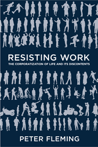

How life and work have become synonymous, and what we can do about it
How life and work have become synonymous, and what we can do about it


 How life and work have become synonymous, and what we can do about it
How life and work have become synonymous, and what we can do about it

|  |
Resisting WorkThe Corporatization of Life and Its DiscontentsPeter Flemingpaper EAN: 978-1-43991-113-6 (ISBN: 1-4399-1113-4) |
"Peter Fleming is one of the world�s leading analysts of work. In Resisting Work, his stunning tour de force, he lifts the lid on neoliberalism's bullying use of biopower to control our lives and how we think of happiness, sadness, and everything in between. And he does so with lively prose, telling anecdotes, and a compelling blend of empirical and theoretical materials."
—Toby Miller, author of Cultural Citizenship: Cosmopolitanism, Consumerism, and Television in a Neoliberal Age
A job is no longer something we "do," but instead something we "are." As the boundaries between work and non-work have dissolved, we restructure ourselves and our lives using social ingenuity to get things done and be resourceful outside the official workday.
In his provocative book, Resisting Work Peter Fleming insists that many jobs in the West are now regulated by a new matrix of power�biopower�where �life itself� is put to work through our ability to self-organize around formal rules. This neoliberal system of employment tries to absorb our life attributes�from our consumer tastes, �downtime,� and sexuality�into employment so that questions of human capital and resources replace questions of employee, worker, and labor.
Fleming suggests that the corporation then turns to communal life�what he calls �the common��in order to reproduce itself and reinforce corporate culture. Yet a resistance against this new definition of work is in effect, and Fleming shows how it may already be taking shape.
Excerpt available at www.temple.edu/tempress
"Resisting Work is a splendid and very useful addition to the burgeoning literature on contemporary work. Fleming adopts a theoretical standpoint, broadly aligned with the lineage of autonomist thought, but he extends it and clarifies employer practices and employee responses, ranging more succinctly over the evolution of management theory and the growth of corporations. As he builds on the basic autonomist precept that capital, or corporations specifically, is not an active creator of value, wealth, or employment, but rather a parasite that rides on the warm sociality of the commons, his arguments are persuasive."
—Andrew Ross, author of Creditocracy and the Case for Debt Refusal
"[Fleming] argues that work has taken over our lives because we have internalized the need to work and produce at all times.... The book ultimately finds its niche among other works of applied critical theory and analyses of employee engagement, corporate culture, managerialism, capitalism, and meaningful work. Summing Up: Recommended."
—Choice
"The core argument of the book is that neoliberalism and managerialism have proved themselves to be unworkable, undermining many of the social supports that they rely on to operate.... firmly grounded in critical and neo-Marxist perspectives, which inform its analysis and central conclusions.... [Its] strength comes from its juxtaposition of debates that usually take place within different communities.... [I]t is thought provoking to reconsider these questions from the perspective of exploitation and class struggle. Some of the most compelling material lies in the analysis of how earlier approaches to management by culture have given way to a system in which workers are encouraged not to conform to corporate culture but rather to bring their whole selves to work in order to better benefit the firm... The book makes many intriguing points... [and] provides a valuable perspective on extremely timely and important issues."
—Administrative Science Quarterly
"Fleming argues that our very lives are becoming corporatizationalized and that it is now increasingly difficult, if not impossible, to separate the work self from the private self. This phenomenon comes not from individuals choosing to invest more of their time and energy into their work, but rather from people being forced, most often implicitly, into breaking down the barriers that separate the public and private spheres.... Fleming�s prose and use of vignettes, stories, and data help to provide any reader with a solid command of the material by the end of the book. Resisting Work is important for anyone interested in the changing nature of work and what it means for the lives of the workers."
—Contemporary Sociology
"Fleming outlines a progression of capitalist management through several eras. Fleming closes this interesting book with a section proposing that in the current era, in which work has penetrated all of life, the only effective response is an 'exit' from work, where workers refuse to demand recognition but instead silently turn away. This, too, is not a new idea in the world of work resistance but is provocative nonetheless.... Resisting Work is a substantial and worthwhile read for theoreticians."
—Labor Studies Journal
Acknowledgments
Introduction: Why Work?
1. Come as You Are: The New Corporate Enclosure Movement
2. Common Matters
3. Why the Corporation Does Not Work: A Brief History
4. Corporate Culture and the Coming Bioproletariat
5. �Free Work� Capitalism
6. How to Resist Work Today
Conclusion: Working after Neoliberalism
Notes
References
Index
Peter Fleming is a Professor of Business and Society at Cass Business School, City University London. He is the co-author of several books, including Contesting the Corporation: Struggle, Power and Resistance in Organizations (with Andr� Spicer), Dead Man Working (with Carl Cederstr�m), and The End of Corporate Social Responsibility: Crisis and Critique (with Marc T. Jones).
Labor Studies and Work
Business/Economics
Cultural Studies
© 2015 Temple University. All Rights Reserved. This page: http://www.temple.edu/tempress/titles/2306_reg.html.